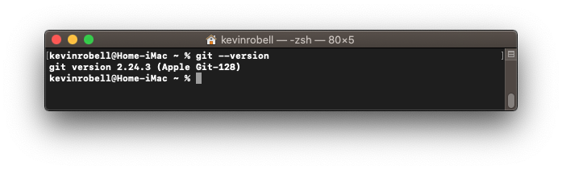
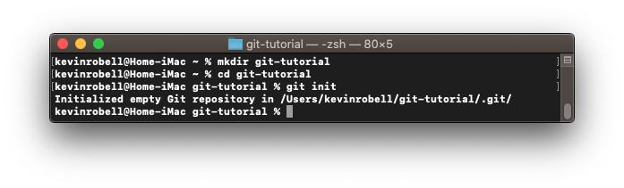
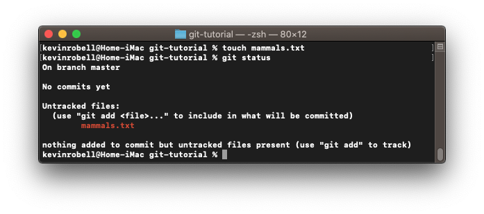
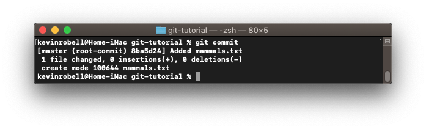
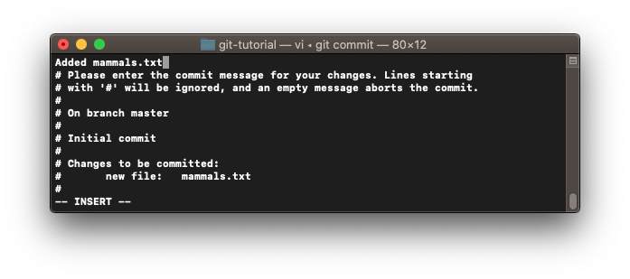
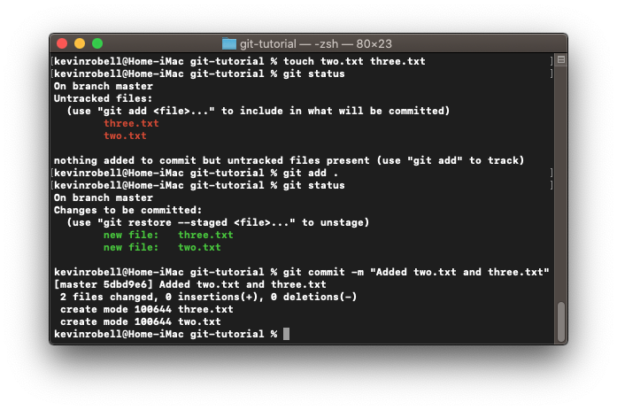
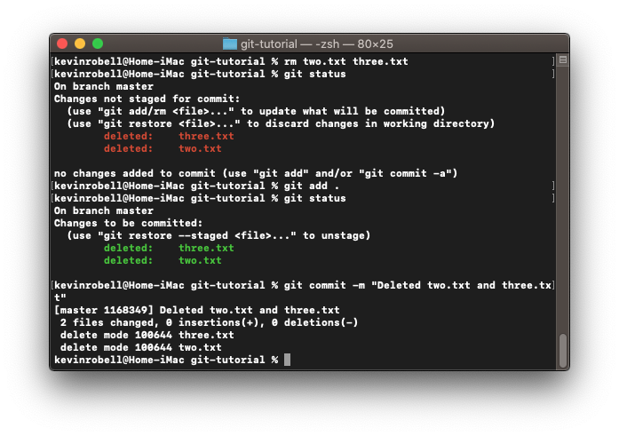
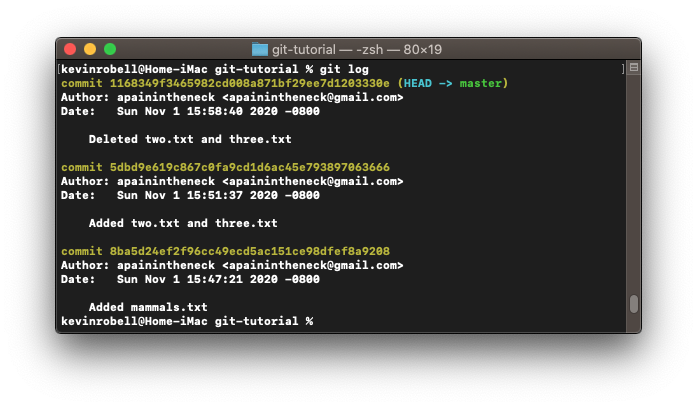

This page teaches the you how to make a git repository, add files, and make commits.
First, you need to check if git is installed. Type git —version to find out the local version. Otherwise you will need to install git.

Create the folder that will hold your project and enter it. Now you need to initialize your repository. Type git init in the command line. This will place a new git repo in the current directory.

Next, I will show you how files are added to the repo. Git allows you to decide which files in the folder get tracked and which are ignored. Create a new empty text file called mammals.txt. We will now check the status of files in the repo by typing git status. It is good practice to check the status before adding files.

You can see that the new file is untracked. That means we should add it to be tracked by typing git add <filename>. Check the status again by typing git status.
Now that we have added the file we can make a commit. A commit is a snapshot of all tracked files in the repo. Users are then allowed to see the state of tracked files over time. Type git commit and the default text editor will open up for you to type your commit message.


You’ve made your first commit. Now let’s practice and make another one. This time create two more files called two.txt and three.txt. Type git add . to add all untracked files. This time we will commit the files by typing git commit -m “commit message” which avoids the use of the external text editor.

You can remove files by deleting them and making another commit. Let’s delete two.txt and three.txt.

To look at the commits we’ve made so far type git log.

Now you know how to initialize a repo and make commits. The next step is branching.